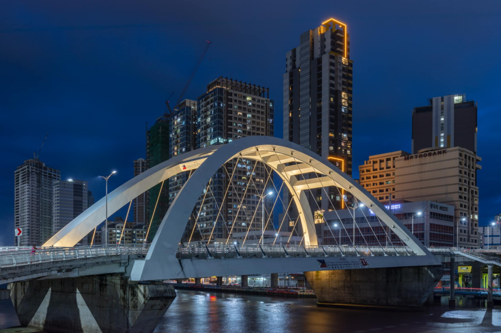

Binondo Bridge

About Binondo Bridge
Binondo Bridge is one of the places I recommend for people who want to slow down and enjoy a different view of Manila. The bridge connects Binondo and Intramuros and provides a relaxing place to appreciate the surrounding city and the nearby Pasig River. If you are looking for a simple place to hang out without spending money, this is a great spot to visit. You can walk across the bridge, enjoy the view of the city and river, take some photos, or just stop for a while and appreciate your surroundings. Sometimes, you do not need an expensive destination to have a good break.
Place Details
| Location | Binondo, Manila |
|---|---|
| Type | Bridge and Public Space |
| Entrance Fee | Free |
| Best Time to Visit | Late afternoon |
| Recommended Activity | Walking, sightseeing, and taking photos |